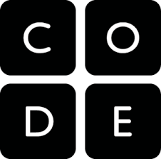
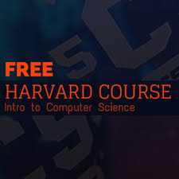

It talks about the benefits of studying computer science and places that will help you get started with free
course materials and online lecture.
....
benefits of studying computer science
The demand for computer scientist and engineers is at an all time high. More companies, not just
tech companies, are now interested in them. From software engineers to web developers to database managers,
our demand is high and its continually increasing. This is due to the rise in technological infrastructure like laptops
which I assume that 1 in people have.
You can work in almost an company or organization because they will need
someone to manage their database systems or web sites their in company app
or even build one if it is not yet available. Computers are found in every organization lately so if
you want to work in agriculture or finance instead of a tech computer, YOU SURELY CAN.
You get the chance to make the world a better place by software design which helps people
do work better, faster and more reliable. Although this impact can be larger working in a big
tech company like FACEBOOK, GOOGLE, MICROSOFT or DROPBOX, You can create your own software to solve problems
that you think will help people. All software are designed to solve a set of problems lets not forget. For Instance,
you can establish a start-up company to solve a particular problem, either for profit or non-profit you will still
get a good cash-return and end up making money.
INTERNSHIPS which exposes us to real life work situation and experience are very
common in the computer science field of study. You can get an internship almost anywhere just like the
job opportunities mentioned above. Some companies even pay their interns. There is also a high chance that you
can get a job at one of the places you once interned.
These are just few of the benefits but there are way more and others keep coming as
the technology division keeps improving.
OPP where abouts(PROGRAMMING)
This is the most common branch of computer science which many people are concentrating on. It is is normally referred to
as programming/coding/software engineering. Its where you hear many programmings languages like; JavaScript, Ruby, Java,
Objective-C, PHP, Phyton and HTML & CSS just to name a few. There are a lot more of these programming languages.
Every computer science major should take at least one OOP class.
Some of the problems that Freshman who hav never coded before face in these class are;
My first Java class was not so bad at all because i read and watch videos on it online. To others
it seemed like learning Chinese for the first time as an English man. It is advisable to know a little
about a class( especially one that deals with OOP) before attending a lecture or it will be very difficult especially
if it is your first programming class.
Learn by doing codes by yourself and don't copy paste from a text book. Most importantly if you are
suppose to submit a project written in a particular language do not copy codes from the internet
and present them as your own. This is a bad practice no CS student should ever do. The lecturer usually
finds out most of the time that you didn't write the code and penalties usually occur.
If you are good at programming then you can only face tiny difficulties during your period of study.
having fun with school projects
Writing cool projects whether in a programming class or web class or database class or operating systems class
is more fun than you can imagine. You may be given a specific idea to work on or you get to choose what you want to
build, either way you will enjoy it a lot. What you build at the end and you will get a real life work experience. Well sort of because
these applications can be used in your resume. You can even upload of the web for people to use. Computer science is
one of few other fields of study that offers this experience while still in school. You can also build a portfolio and
link all your projects. This can be used in place of a resume 90% of the time.
How these projects helps us to......
Employers can hire you based on your projects alone if they are terrific and you can convince
them you made it during a interview if there is one..
Less training is needed once hired as you have already worked on projects and you known how to
go about them. Training starts in the classroom, lecture 1.
think of something
places to get started
There are many places online where you can learning computer science for free. These materials are great and they give you
all the information you need to know but it is not equivalent to a college/university degree. If you
love computer science you can enroll in a university and use these online materials to boost your underspending
in a particular area or concept. Although most of these online sites/materials focus on computer programming, there
are some that focus on the non-programming parts such as ALGORITHMS AND CRYPTOGRAPHY which are also important.
One of my favorite sites to learn coding before taking the actual class is code academy. They have a variety of
programming courses like HTML/CSS, JavaScript, ruby and ruby on rails, PHP, SQL
Python and Java. They also teach some important frameworks like JQuery, Angular JS and ruby on rails. You also get to
work with some APIs and the interesting command line
and the mysterious Git.
Khan academy has a vast vault of information for interested learners of-course they have not forgotten the
computer science field. You can learn about algorithms, cryptography( how we protect our private information),
information theory( how information is encoded and compressed) and how the internet works. You can also learn
HTML/CSS and make web pages and drawing using javaScript & procession JS which is awesome.

Code Org is a site that aims to encourage people, particularly school students
to learn computer science. Code Org has courses for students from kindergraden to university level.
In 2013 they launched the hour code which is a one hour introduction to computer science,
designed to demystify code and show that anyone can learn the basics.
abracadabra
YES! google. As a computer science student or someone interested in coding, google search should be your number
resource and friend if you have any type of question.......................
open course ware
These are school materials when are also free, hence open course ware. They are available in video and audio formats, sometimes both
......................................
The MIT open course ware provides us with many courses such as introduction to computer science and
programming, computer system engineering, computer system security and many more courses tahan you will ever need.
The standford open course ware provides us with many courses such as introduction to computer science: programming
methodology, introduction to computer netwroking and many many more than you can learn from

The standford open course ware provides us with many courses such as introduction to computer science
course, intensive introduction to computer science using C, PHP, and javaScript, Understanding Computers and the Internet,
and many more.
All of the video courses are also available on YOUTUBE
There are a lot of matreials out there apart from the ones above that can help you learn computer science. You can start
anywhere so you don't have to worry about where to start as all skills will come in handy in the near future.
Those who are not interested in programming can always try out other areas such as networking or data analyst, there
are more areas in computer science you can imagine apart from programming.